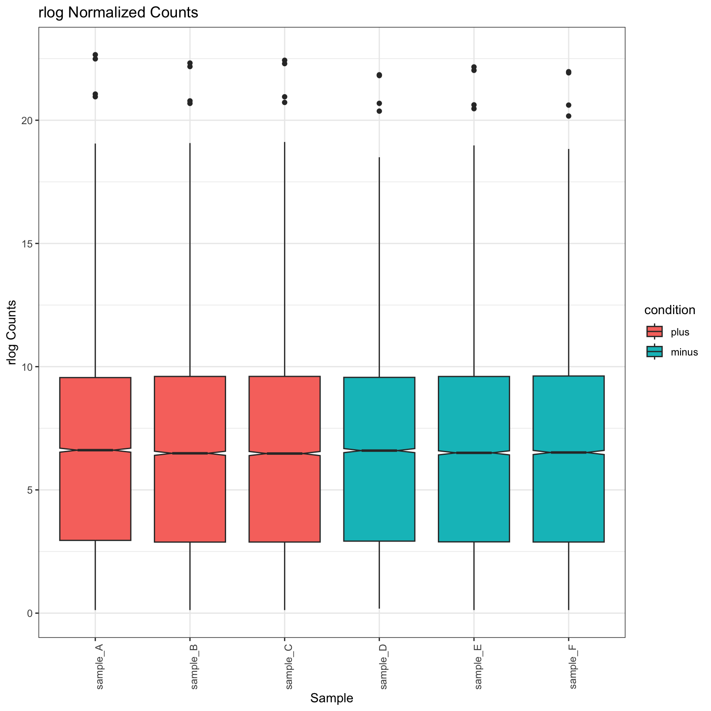
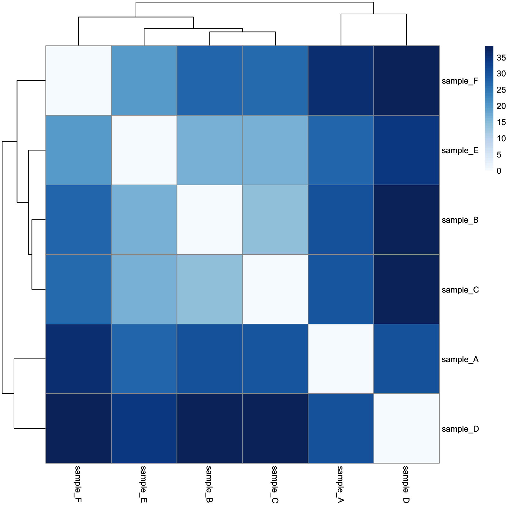

Module 11X: Bonus Content
UM Bioinformatics Core
2022-12-23
Objectives
- Additional visualizations for gene/sample level QC assessment
Count boxplots
To evaluate the difference between the count distributions before and
after normalization, let’s extract the raw counts and the rlog
normalized counts, and coerce them to tibbles.
raw_counts = as_tibble(counts(dds), rownames = 'id')
norm_counts = as_tibble(assay(rld), rownames = 'id')
raw_counts# A tibble: 16,249 × 7
id sample_A sample_B sample_C sample_D sample_E sample_F
<chr> <int> <int> <int> <int> <int> <int>
1 ENSMUSG00000000001 1041 905 1296 3481 1283 1921
2 ENSMUSG00000000028 1043 1232 1664 2690 1825 2720
3 ENSMUSG00000000031 1819 914 1618 8618 1350 1222
4 ENSMUSG00000000037 19 11 18 48 37 29
5 ENSMUSG00000000049 18 1 4 24 1 1
6 ENSMUSG00000000056 14972 14768 21026 22962 22263 23622
7 ENSMUSG00000000078 888 607 911 1689 738 1180
8 ENSMUSG00000000085 402 483 744 898 811 1261
9 ENSMUSG00000000088 904 1212 1733 2434 1387 1267
10 ENSMUSG00000000093 7 8 16 23 17 29
# … with 16,239 more rowsnorm_counts# A tibble: 16,249 × 7
id sample_A sample_B sample_C sample_D sample_E sample_F
<chr> <dbl> <dbl> <dbl> <dbl> <dbl> <dbl>
1 ENSMUSG00000000001 10.5 10.4 10.4 10.8 10.4 10.6
2 ENSMUSG00000000028 10.6 10.7 10.7 10.7 10.8 11.0
3 ENSMUSG00000000031 11.2 10.5 10.7 11.9 10.6 10.3
4 ENSMUSG00000000037 4.64 4.56 4.58 4.66 4.72 4.62
5 ENSMUSG00000000049 3.02 2.82 2.84 2.94 2.81 2.81
6 ENSMUSG00000000056 14.3 14.3 14.3 13.9 14.4 14.2
7 ENSMUSG00000000078 10.1 9.77 9.86 9.93 9.68 9.90
8 ENSMUSG00000000085 9.28 9.41 9.53 9.23 9.60 9.80
9 ENSMUSG00000000088 10.4 10.6 10.7 10.5 10.5 10.2
10 ENSMUSG00000000093 3.88 3.89 3.93 3.91 3.94 3.99
# … with 16,239 more rowsNext, this is the perfect opportunity to use
tidyr::pivot_longer() because we want to use
ggplot() for the bar plots, but the data is currently in
the wide form, not the tidy form!
tidy_raw = tidyr::pivot_longer(raw_counts, -id, names_to = 'sample', values_to = 'counts')
tidy_norm = tidyr::pivot_longer(norm_counts, -id, names_to = 'sample', values_to = 'counts')We should also join in the sample metadata so that we can color on the sample groups.
samplesheet_tbl = as_tibble(colData(dds), rownames = 'sample')
tidy_raw = tidy_raw %>% left_join(samplesheet_tbl, by = 'sample')
tidy_norm = tidy_norm %>% left_join(samplesheet_tbl, by = 'sample')raw_boxplot = ggplot(tidy_raw, aes(x = sample, y = log2(counts), fill = condition)) +
geom_boxplot(notch = TRUE) +
labs(
title = 'Raw Counts',
x = 'Sample',
y = 'log2 Counts') +
theme_bw() + theme(axis.text.x = element_text(angle = 90))
raw_boxplotWarning: Removed 6656 rows containing non-finite values (`stat_boxplot()`).Question
Why did we get that warning about non-finite values?
norm_boxplot = ggplot(tidy_norm, aes(x = sample, y = counts, fill = condition)) +
geom_boxplot(notch = TRUE) +
labs(
title = 'rlog Normalized Counts',
x = 'Sample',
y = 'rlog Counts') +
theme_bw() + theme(axis.text.x = element_text(angle = 90))
norm_boxplot
Observe that the normalized plots truly do appear normalized; their
means are more uniform. Let’s go ahead and save these plots in our
outputs/figures folder.
ggsave(filename = 'outputs/figures/Boxplot_raw_condition.pdf', plot = raw_boxplot, height = 6, width = 6)
ggsave(filename = 'outputs/figures/Boxplot_rlog_condition.pdf', plot = norm_boxplot, height = 6, width = 6)Heatmaps
Let’s create a heatmap based on the distance between pair-wise sample expression profiles. This is another vantage point of how similar and dissimilar the samples are from one another. To get started, we actually want a plain matrix, with out a column for the gene IDs, as we did for the boxplot.
norm_mat = assay(rld)
head(norm_mat) sample_A sample_B sample_C sample_D sample_E sample_F
ENSMUSG00000000001 10.514813 10.366709 10.419463 10.840373 10.410449 10.578771
ENSMUSG00000000028 10.604461 10.734506 10.735026 10.682714 10.820938 10.990999
ENSMUSG00000000031 11.160276 10.498747 10.742763 11.861617 10.578156 10.298022
ENSMUSG00000000037 4.642433 4.555500 4.578934 4.656950 4.719012 4.620204
ENSMUSG00000000049 3.017478 2.820198 2.843894 2.936455 2.814833 2.811619
ENSMUSG00000000056 14.321672 14.284652 14.337197 13.904238 14.393912 14.235971Next, we’ll use the dist() function on the transpose of
norm_mat to compute the distance. We will use the default
Euclidean distance.
dist_mat = dist(t(norm_mat), upper = TRUE)Next, we’ll plot a very simple pheatmap() using this
matrix. But let’s check the class of dist_mat first,
because the input to pheatmap() needs to be a
matrix.
class(dist_mat)[1] "dist"# Have to coerce it
dist_mat = as.matrix(dist_mat)
dist_heatmap = pheatmap(
mat = dist_mat,
cluster_rows = TRUE,
cluster_cols = TRUE,
show_rownames = TRUE,
show_colnames = TRUE
)
dist_heatmap
This is nice, but there are a few tweaks we might consider:
- The color scale used by default is divergent, but our distances are values in [0, Inf), so a linear color scale would be more appropriate here.
- We might like for the sample metadata to be included so that we can
easily tell if the samples cluster by their
condition.
To accomplish the first change, we’ll use the
colorRampPalette() function from the
RColorBrewer package. This is the package
to use for creating color scales of all varieties. We highly recommend
exploring the package website and documentation.
colors = colorRampPalette(brewer.pal(9, 'Blues'))(50)Now let’s use that in the pheatmap() call using the
color parameter:
dist_heatmap = pheatmap(
mat = dist_mat,
color = colors,
cluster_rows = TRUE,
cluster_cols = TRUE,
show_rownames = TRUE,
show_colnames = TRUE
)
dist_heatmap
This is a lot more reasonable. More distant samples are a deeper blue, while more similar samples are closer to white. Next, let’s add some annotation data.
annotation_tbl = samplesheet_tbl %>%
dplyr::select(sample, condition) %>%
tibble::column_to_rownames(var = 'sample')
dist_heatmap = pheatmap(
mat = dist_mat,
color = colors,
cluster_rows = TRUE,
cluster_cols = TRUE,
show_rownames = TRUE,
show_colnames = TRUE,
annotation_col = annotation_tbl
)
dist_heatmapAnd now we have our conditions as a colored annotation bar along the columns.
Sources
- HBC QC tutorial: https://hbctraining.github.io/DGE_workshop/lessons/03_DGE_QC_analysis.html
- Detailed Heatmap tutorial from Galaxy: https://training.galaxyproject.org/training-material/topics/transcriptomics/tutorials/rna-seq-viz-with-heatmap2/tutorial.html
Session Info
sessionInfo()R version 4.2.2 (2022-10-31)
Platform: x86_64-apple-darwin17.0 (64-bit)
Running under: macOS Ventura 13.1
Matrix products: default
LAPACK: /Library/Frameworks/R.framework/Versions/4.2/Resources/lib/libRlapack.dylib
locale:
[1] en_US.UTF-8/en_US.UTF-8/en_US.UTF-8/C/en_US.UTF-8/en_US.UTF-8
attached base packages:
[1] stats4 stats graphics grDevices utils datasets methods base
other attached packages:
[1] forcats_0.5.2 stringr_1.4.1 purrr_0.3.5
[4] readr_2.1.3 tibble_3.1.8 tidyverse_1.3.2
[7] biomaRt_2.52.0 data.table_1.14.4 RColorBrewer_1.1-3
[10] pheatmap_1.0.12 ggrepel_0.9.1 dplyr_1.0.10
[13] tidyr_1.2.1 ggplot2_3.4.0 DESeq2_1.36.0
[16] SummarizedExperiment_1.26.1 Biobase_2.56.0 MatrixGenerics_1.8.1
[19] matrixStats_0.62.0 GenomicRanges_1.48.0 GenomeInfoDb_1.32.4
[22] IRanges_2.30.1 S4Vectors_0.34.0 BiocGenerics_0.42.0
[25] knitr_1.40 rmarkdown_2.17
loaded via a namespace (and not attached):
[1] googledrive_2.0.0 colorspace_2.0-3 ellipsis_0.3.2 XVector_0.36.0
[5] fs_1.5.2 rstudioapi_0.14 farver_2.1.1 bit64_4.0.5
[9] AnnotationDbi_1.58.0 fansi_1.0.3 lubridate_1.8.0 xml2_1.3.3
[13] codetools_0.2-18 splines_4.2.2 cachem_1.0.6 geneplotter_1.74.0
[17] jsonlite_1.8.3 broom_1.0.1 annotate_1.48.0 dbplyr_2.2.1
[21] png_0.1-7 compiler_4.2.2 httr_1.4.4 backports_1.4.1
[25] assertthat_0.2.1 Matrix_1.5-1 fastmap_1.1.0 gargle_1.2.1
[29] cli_3.4.1 htmltools_0.5.3 prettyunits_1.1.1 tools_4.2.2
[33] gtable_0.3.1 glue_1.6.2 GenomeInfoDbData_1.2.8 rappdirs_0.3.3
[37] Rcpp_1.0.9 cellranger_1.1.0 jquerylib_0.1.4 vctrs_0.5.0
[41] Biostrings_2.64.1 xfun_0.34 rvest_1.0.3 lifecycle_1.0.3
[45] XML_3.99-0.12 googlesheets4_1.0.1 zlibbioc_1.16.0 scales_1.2.1
[49] hms_1.1.2 parallel_4.2.2 yaml_2.3.6 curl_4.3.3
[53] memoise_2.0.1 sass_0.4.2 stringi_1.7.8 RSQLite_2.2.18
[57] highr_0.9 genefilter_1.78.0 filelock_1.0.2 BiocParallel_1.30.4
[61] rlang_1.0.6 pkgconfig_2.0.3 bitops_1.0-7 evaluate_0.17
[65] lattice_0.20-45 labeling_0.4.2 bit_4.0.4 tidyselect_1.2.0
[69] magrittr_2.0.3 R6_2.5.1 generics_0.1.3 DelayedArray_0.22.0
[73] DBI_1.1.3 pillar_1.8.1 haven_2.5.1 withr_2.5.0
[77] survival_3.4-0 KEGGREST_1.36.3 RCurl_1.98-1.9 modelr_0.1.9
[81] crayon_1.5.2 utf8_1.2.2 BiocFileCache_2.4.0 tzdb_0.3.0
[85] progress_1.2.2 readxl_1.4.1 locfit_1.5-9.6 grid_4.2.2
[89] blob_1.2.3 reprex_2.0.2 digest_0.6.30 xtable_1.8-4
[93] munsell_0.5.0 bslib_0.4.1 These materials have been adapted and extended from materials listed above. These are open access materials distributed under the terms of the Creative Commons Attribution license (CC BY 4.0), which permits unrestricted use, distribution, and reproduction in any medium, provided the original author and source are credited.